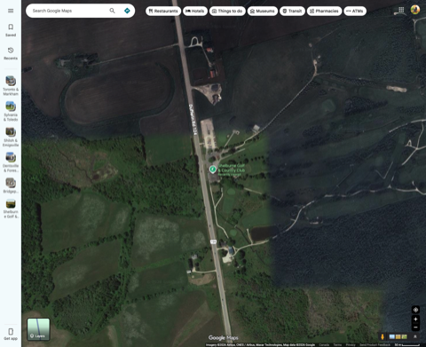
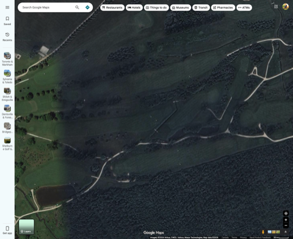

⚠️ 样本规模提醒（务必先读）：这份报告的可信度和 Sylvania CC 那两份（89 轮 / 510 轮）不在一个量级。CJGA 在 Shelburne 目前只查到 2025 单年数据，女子组 Junior(U19)+Bantam(U15) 两个年龄组合计只有 10 人、20 轮。样本量小意味着"难度排名"里的名次差距可能只是几个人的偶然发挥，不是稳固的球场规律——请把这份报告当作"方向性参考"，而不是像 Sylvania 报告那样的"高置信度结论"。
说明：CJGA 使用 OnPar.golf 计分系统，赛事逐洞成绩公开可查（无需登录）。本报告数据来自 2025 年 5 月 31 日-6 月 1 日 "CJGA Junior Worlds Qualifier at Shelburne"，覆盖 Junior Girls(U19) 7 人 + Bantam Girls(U15) 3 人，两组球道 Par/码数完全一致（同一套发球台），已合并为单一数据集；总杆已与官方榜单逐一核对吻合。该系统同时记录了 FIR(打上球道)/GIR(标准杆上果岭) 字段，但抽查发现这两项字段全员均为 0/未记录，判断为该赛事未启用该统计功能，本报告未使用这两项数据。
| 名次 | R1+R2 总杆 | 较 Par(142) |
|---|---|---|
| 1 | 167 | +25 |
| 2 | 170 | +28 |
| 3 | 172 | +30 |
| 4 | 176 | +34 |
| 5 | 177 | +35 |
| 6 | 184 | +42 |
| 7 | 185 | +43 |
| 8 | 189 | +47 |
| 9 | 190 | +48 |
| 10 | 201 | +59 |
和 Sylvania CC 完全不同的画像
下图为各洞场均相对 Par 的偏离；样本合并 Junior Girls + Bantam Girls 共 10 人 20 轮。
| 洞 | Par | 场均 | 较 Par | 难度排名 | 成绩分布(鸟/Par/柏忌/双柏忌+，n=20) |
|---|
看到什么（附样本量提醒）
| 观察 | 证据(n=20，谨慎参考) | 建议 |
|---|---|---|
| 两个 Par5(12号/15号)双柏忌率异常高 | 12号55%双柏忌+，15号45%双柏忌+ | Par5 在这个球场可能不是常规意义的"送分洞"——赛前需要专门核实这两洞是否有水塘/树林走廊影响两杆布局，不要默认 Par5=进攻机会 |
| 9 号 Par3 是当前唯一稳定送分信号 | 较Par仅+0.35，0次双柏忌 | 重点练好这一洞的标准杆把握，是当前样本里最具确定性的"该拿分"的洞 |
| 整体双柏忌率偏高（多洞超过30%） | 对比Sylvania Qualifier多数洞双柏忌率在5-15%区间 | 如果这批数据能代表球场真实难度，止损能力(避免大数字)应优先于抓鸟——但仍需更多年份数据验证是球场原因还是选手水平原因 |
俱乐部官网原文提到:"...six spring-fed ponds providing a challenge to all levels of golfers"（六个泉水补给的池塘为所有水平的球员带来挑战），也提到球场位于 Niagara Escarpment 西缘、地形起伏。去卫星图核实了一下。

会所紧邻至少一处池塘，球场整体嵌在树林走廊中，与 Sylvania CC 那种开阔平坦的俄亥俄州公园式球场（parkland）明显不同——这里的球道更多是"树林夹道 + 局部水塘"的丘陵林地式（parkland-woodland）布局。

球场内部可见多处独立池塘散布在不同球道之间，球道普遍较窄、被树林分隔。这张图右半部分因卫星图拼接问题分辨率偏低，未能精确到"哪个洞的哪一侧有水"的逐洞级别，但足以确认水障碍是真实、分散在多个洞的结构性因素，不是集中在一两个洞。
结论：和 Sylvania CC「水只集中打在 1/18/2 号洞」不同，Shelburne 的水障碍看起来分散在多个球道，这可能也是"18 个洞较 Par 全部为正、没有明显送分洞"这一现象的物理成因之一——但受限于卫星图分辨率和数据量，这只是合理推测，不是精确结论。
当前数据显示 Shelburne GCC 女子组难度分布比 Sylvania CC 更均匀、没有明显送分洞，9 号 Par3 是唯一相对友善的洞，两个 Par5(12/15号) 反而是双柏忌高发区——这和"水障碍分散在多个球道"的卫星图证据相互印证，方向是合理的。但必须再强调一次：这只基于单年 20 轮数据，随时可能被更多数据推翻。如果未来 CJGA 在该球场举办更多年份的赛事，或你能找到其他年份/其他分区的比赛结果，建议重新采集数据、扩大样本后再复核这份报告的结论。